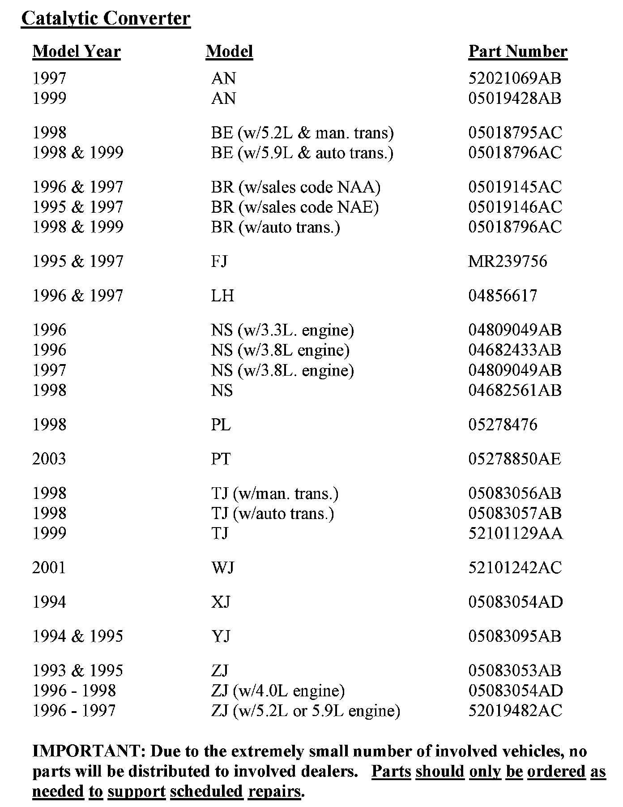
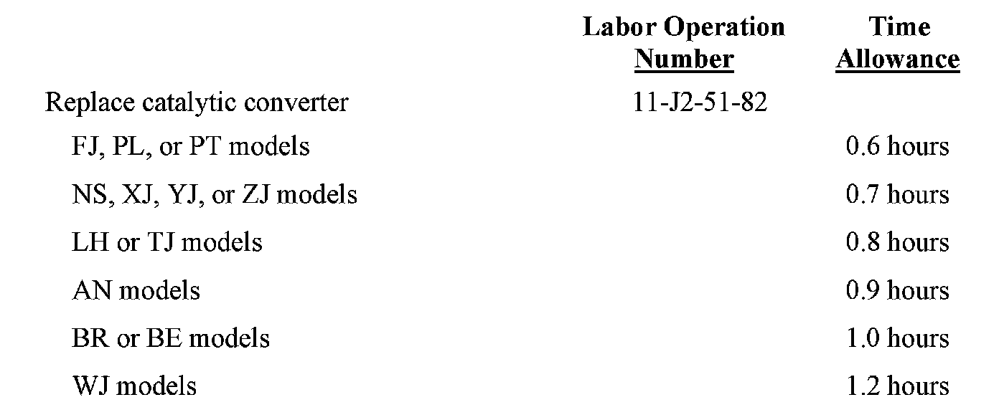

Recall - Replace Mopar(R) Value Line Catalytic Converter: Overview
October 2009Dealer Service Instructions for:
Emissions Recall J25
Mopar Value Line Catalytic Converters
Models
1997 - 1999 (AN) Dodge Dakota
1998 - 1999 (BE) Dodge Ram Truck
1995 - 1999 (BR) Dodge Ram Truck
1995 - 1997 (FJ) Chrysler Sebring and Eagle Talon
1996 - 1997 (LH) Chrysler LHS and Concorde
1996 - 1998 (NS) Dodge Grand Caravan and Chrysler Town & Country
1998 (PL) Plymouth Neon
2003 (PT) Chrysler PT Cruiser
1998 - 1999 (TJ) Jeep(R) Wrangler
2001 (WJ) Jeep(R) Grand Cherokee
1994 (XJ) Jeep(R) Cherokee
1994 - 1995 (YJ) Jeep(R) Wrangler
1993 - 1998 (ZJ) Jeep(R) Grand Cherokee
NOTE:
This recall applies only to the above vehicles that had a Mopar Value Line catalytic converter installed.
IMPORTANT:
Some of the involved vehicles may be in Dealer vehicle inventory. Dealers should complete this recall service on these vehicles before retail delivery. Involved vehicles can be determined by using the VIP inquiry process.
Subject
During a prior service appointment, a Mopar Value Line catalytic converter was installed on about 47 of the above vehicles. These catalytic converters may fail an emissions inspection test.
Repair
The catalytic converter must be replaced.

Parts Information
Completion Reporting and Reimbursement
Claims for vehicles that have been serviced must be submitted on the
DealerCONNECT Claim Entry Screen located on the Service tab. Claims
submitted will be used by Chrysler Group LLC to record recall service completions and provide dealer payments.

Use the labor operation number and time allowances shown.
Add the cost of the recall parts package plus applicable dealer allowance to your claim.
NOTE:
See the Warranty Administration Manual, Recall Claim Processing Section, for complete recall claim processing instructions.
Dealer Notification
To view this notification on DealerCONNECT, select "Global Recall System" on the Service tab, then click on the description of this notification.
Owner Notification and Service Scheduling
All involved vehicle owners known to Chrysler are being notified of the service requirement by first class mail. They are requested to schedule appointments for this service with their dealers. A generic copy of the owner letter is included.
Enclosed with each owner letter is an Owner Notification postcard to allow owners to update our records if applicable.
Vehicle Lists, Global Recall System, VIP and Dealer Follow Up
All involved vehicles have been entered into the DealerCONNECT Global Recall System (GRS) and Vehicle Information Plus (VIP) for dealer inquiry as needed.
GRS provides involved dealers with an updated VIN list of their incomplete vehicles. The owner's name, address and phone number are listed if known. Completed vehicles are removed from GRS within several days of repair claim submission.
To use this system, click on the "Service" tab and then click on "Global Recall System." Your dealer's VIN list for each recall displayed can be sorted by: those vehicles that were unsold at recall launch, those with a phone number, city, zip code, or VIN sequence.
Dealers must perform this repair on all unsold vehicles before retail delivery. Dealers should also use the VIN list to follow up with all owners to schedule appointments for this repair.
Recall VIN lists may contain confidential, restricted owner name and address information that was obtained from the Department of Motor Vehicles of various states. Use of this information is permitted for this recall only and is strictly prohibited from all other use.
Additional Information
If you have any questions or need assistance in completing this action, please contact your Service and Parts District Manager.
Customer Services Field Operations
Chrysler Group LLC